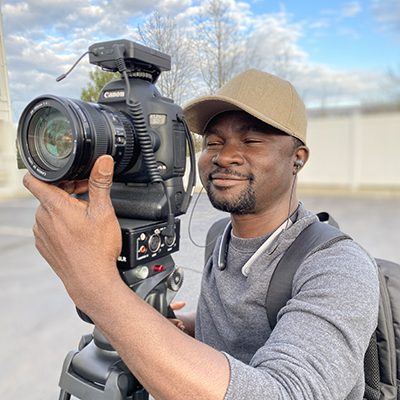

Ogooluwa is a video journalist/ photographer with 14 years ofexperience in the broadcasting industry.He started his career at DAAR Communications PLC, owners of Africa independent Television(AIT) and Raypower 100.5fm. Ogooluwa worked as a news ,sports and cameraman for 8 years, where he had the privilage of working with many others on air whom had great personalities.
While at AIT Britto was able to be apart of the OB team that covered major sports production and other national events along with live news content events. Sports events included Nigeria national team matches; sometimes within or outside of Nigeria.Ogooluwa has covered matches such as the Nigeria Premier League( now Nigeria Professional League) along with other major tournaments hosted by Nigeria. Such as West Africa's Football Union(WAFU),FIFA U17 junior World Cup in 2009(Nigeria 2009) etc.
Super Sports Nigeria was a major client of Ogooluwa, were he was employeed as one of their OB and ENG sports cameraman.Super sports is a sports channel on dstv and paytv who specializes in numerous varieties of sports productions. Britto's Often performed projects included live sports coverage of National team matches,Nagerian Professional Football(NPFL) and National sports festivals that were hosted by the counrty.
Ogooluwa joined the Continental Broadcasting LTD in 2011 as a news cameraman/editor and was posted at Osun State Nigeria as the bureau's cameraman/editor. While employye there Britto ran into a familiar face, and as fate would have, that person who was a long time friend also happen to be a cameraman/editor. Reuion didn't stop there! Britto also reuinted with his former friend who's an reporter. Together they covered the state for 3 years along with every news activity that took place in the state.
Britto joined CNBC AFRICA in 2016 as a cameraman/editor working as a News and Documentary cameraman/editor. He has shot and edited numerous documentaries for the company and is currently the production supervisor for his department.
In his spare time, Britto puts in a lot of camera action! Whether it's for scenary or he's working on a professional project. He usually performs private photo shoots. So he would go to his clients' house and set up his equitment. Also, he films and records birthday parties, church events and many other things.


Adventure is going out of your comfort zone to open yourself up to the experiences and beauty that life gives you, no matter what path you choose to go on. Adventure is all about taking each experience, regardless if you know the outcome or not and facing it head-on, it is about seeing the world from a different perspective, even if you’ve seen it a million times before. So just because we are climbing high mountains, bathing elephant and diving in the air, doesn’t mean that our adventure is better than everyone else. To me, adventure is stepping out of your comfort zone by doing something that you normally wouldn’t do. From helping out a random person to working up the courage to make friends with a stranger. It is about finding something that you love and pursuing it relentlessly. I have the opportunity of traveling to different countries for official purposes and I always use the opportunity to visit some close by tourist attractions centers close to me or far from me depending on my location and time at that moment. It is exploring where you are and choosing to look at it differently. It’s about going on a road trip not because you want to reach a particular destination, but because of the journey, there would be awesome! Adventure can be found in our everyday lives, in the little things we do if only you choose to see it.So why not look around you today and see the reason for Adventure of nature and humans. - " Ogooluwa Britto"


" Taking an image, freezing a moment, reveals how rich reality truley is" - Unknow
Provide your contact and he'll reach out to you; to see just how he could make your dreams come true!